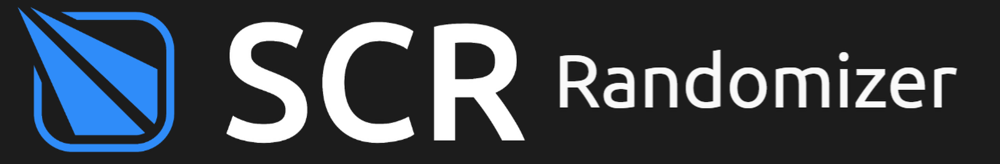

This is currently under maintenance. As this site is currently a work in progress, this feature is currently unavailable. Please try again later to access site features. I apologize for the inconvenience.


Welcome! Click the screen to start.